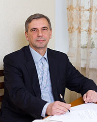

-

Освіта:
1983 диплом з відзнакою, механіко-математичний факультет, Київський національний університет ім. Тараса Шевченка
1987 кандидат фізико-математичних наук, механіко-математичний факультет, Київський національний університет ім. Тараса Шевченка
Професійна діяльність:
1983-1987 молодший науковий співробітник, Київський національний університет ім. Тараса Шевченка
1987-1990 науковий співробітник, Київський національний університет ім. Тараса Шевченка
1990-1994 асистент, кафедра теоретичної та прикладної механіки, Київський національний університет ім. Тараса Шевченка
1994-дотепер доцент, кафедра теоретичної та прикладної механіки, Київський національний університет ім. Тараса Шевченка
1994-дотепер старший науковий співробітник дослідницької лабораторії механіки спряжених хвильових полів, Київський національний університет ім. Тараса Шевченка
2000-2001 University of Florida, FL, Gainesville, USA. Department of Industrial & System Engineering, Visiting Research Scholar (summer appointment)
2001-2003 University of Florida, FL, Gainesville, USA. Department of Industrial & System Engineering, Visiting Research Scholar (summer appointment
Професійна активність:
член вченої ради, механіко-математичний факультет, Київський національний університет ім. Тараса Шевченка (2008-2013)
член спеціалізованої ради зі спеціальності 01.02.04, механіко-математичний факультет, Київський національний університет ім. Тараса Шевченка (2008-2013)
Напрямки наукової діяльності:
застосування методів теорії аналітичних функцій при розв'язанні граничних та початково-граничних мішаних задач
динамічна механіка руйнування
теорія тріщин
дослідження неінтегровних механічних динамічних систем
теорія хаосу
теорія спектральних розкладів та періодограмних оцінок на нерегулярних сітках
поширення хвиль в періодичних структурах
статистичні методи обробки результатів механічних експериментів
теорія та практика побудови чисельних методів для розв'язання нестаціонарних нелінійних граничних задач механіки
дослідження ефектів руйнування хвильовими процесами
методи знаходження оптимальних параметрів конструкцій та управління розподіленими механічними системами
застосування оптимізаційно-статистичних методів при розробці нових матеріалів із заданими характеристиками
Викладає нормативний курси:
Теоретична механіка 1-3 курси бакалаврату
Сучасні інтегровні системи проектування в механіці 4 курс бакалаврату
Викладає спеціалізовані курси:
Аналітичні методи в механіці 4 курс бакалаврату
Теорія електромеханічних коливань 4 курс бакалаврату
Математичне моделювання механічних систем і процесів 1 курс магістратури
Перейти до робочих програмПрацював за грантами:
AFOSR. F-08630-00-1-0001. «Optimal Risk Path and Target Coverage Algorithms», Dept. Of Industrial and System Engineering, University of Florida, Gainesville, FL, USA, 2000-2002
AFOSR. F-49620-01-1-0338. «Robust Decision Making: Addressing Uncertainties in Distributions», Dept. Of Industrial and System Engineering, University of Florida, Gainesville, FL, USA, 2002-2005
«Eavesdropping (or Jamming) of Communication Networks». AFOSR Project #: FA9550-05-1-0137, RMFE Lab., Dept. of Industrial and System Engineering, University of Florida, Gainesville, FL, USA. 2005-2006
Institute for Defense Analysis. «Modeling Properties of Metals and Optimal Design of Experiments», Washington, Columbia DC. 2004
International Center for Automated Information Research. «Risk Management with Conditional Value-at-Risk: Methodology, Applications, and Software», University of Florida, Gainesville, FL, USA, 2003-2004
Standard and Poor's. «Classification Approaches in Financial Applications», 2002-2003.
Як керівник брав участь у наукових грантах:
«Застосування оптимізаційно-процентильних підходів у задачах розподілення ресурсів». Р 235 УНТЦ, Київський національний університет, імені Тараса Шевченка. 2006
EOARD 133063/USTCP-590. «Advanced statistical tools for modeling of composition sand processing parameters for allow development», Київський національний університет імені Тараса Шевченка, 2013-2016.
Основні публікації:
1. Zrazhevsky G. et al. Advanced Statistical Tools for Modelling of Composition and Processing Parameters for Alloy Development. Optimization, Control, and Applications in the Information Age. 2016, Springer, 393-413.
2. Uryasev S., Zrazhevsky G. Classification Using Optimization: Application to Credit Rating of Bonds. E.J. Konthoghiorghes, et al (Eds) Computational Methods in Financial Engineering. Springer Publishers, 2008, 211-239.
3. Zrazhevsky G. et al.Estimating the Probability Distributions of Alloy Impact Toughness: a Constrained Quantile Regression Approach. D. Grundel, et al (Eds) Advances in Cooperative Control and Optimization, Springer Lecture Notes in Economics and Mathematical Systems, Vol. 588, 2007, 269-283.
4. G.M. Zrazhevsky (with Golodnikov, A., Macheret, J., Trindade, A, and Uryasev, S.) "Statistical Modelling of Alloy Composition and Processing Parameters," Modeling and Simulation in Material Science and Engineering, 13, 633-644, (2005).
5. G.M. Zrazhevsky . “III mode cracks propagation along the curved trajectories”. Bulletin of National Taras Shevchenko University of Kiev, 11-12, Publisher Center “Kiev University”, 119-121(2004).
6. G.M. Zrazhevsky (with Ostrik V.I) “The Asymptotic of Canonical Products”. Mathematical Methods and Physicomechanical Fields. 47, N 3. Institute of Applied Problems in Mechanics and Mathematics, NASU, Ukraine, 69-77(2004).
7. G.M. Zrazhevsky (with Krokhmal, P., Murphey R., Pardalos, P., Uryasev, S.) “Robust Decision Making: Addressing Uncertainties in Distributions.” S. Butenko et al (Eds.) Cooperative Control: Models Applications and Algorithms. Kluwer Academic Publishers, 165-185 (2003). (Download PDF)
8. G.M. Zrazhevsky (with Krokhmal, P. and Uryasev, S.) “Robust Numerical Comparison of CVaR and CDaR Approaches: Application to Hedge Funds. W.T. Ziemba (Ed.) The Stochastic Programming Approach to Asset Liability and Wealth Management.” AIMR/Blackwell Publisher (2003).
9. G.M. Zrazhevsky (with Krokhmal, P., and Uryasev, S.) “Risk Management for Hedge Fund Portfolios: A Comparative Analysis of Linear Portfolio Rebalancing Strategies.” Journal of Alternative Investments, V.5, #1, 10-29 (2002).
10. G.M. Zrazhevsky, “Some nonstationary fracture mechanics problem on an interface”, Bulletin of Kiev Tech University (KPI), V1, 42-54 (2000).
11. G.M. Zrazhevsky (with Ulitko A.F.) “Dynamical characteristics of II mode of fracture along an interface”, Fracture Mechanics, V2, 277-281 (1999).
12. G.M. Zrazhevsky, “Local solution in dynamic crack propagation along an interface”, Zeszyty Naukowe katedry Mechaniki Stosowanej zeszyt” nr 10. PTMTS “Modelowanie w Mechanice”, 351-357 (1999).
13. G.M. Zrazhevsky, “Dynamic crack propagation along an interface”, Bulletin of Kiev University, V3, Ser. Phis-Math, 30-38 (1998). (Download PDF)
14. G.M. Zrazhevsky, “Some model of dynamic crack propagation along an interface between two media”, Polymery I Kompozyty Konstrukcyjne, V.2 205-210 (1998).
15. G.M. Zrazhevsky, “Interface dynamic fracture propagation”, ZAMM. Applied Mathematics and Mechanics, V.5, Sup.5, 571-573 (1996).
Навчальні посібники:
1. Зражевський Г. М., Кепич Т. Ю., Куценко О. Г. Основи теорії міцності, деформації та механіки руйнування. Навчальний посібник. К: ЛОГОС, 2005, 169 с.
2. Зражевський Г. М. Застосування аналітичних функцій в задачах механіки. МЕтодичний посібник для студентів спеціалізації Механіка, електронна версія, 61 с., 2005.
3. Зражевський Г. М. Чисельні методи в задачах механіки. Розв'язання граничних задач. Методичний посібник для студентів спеціалізації Механіка, електронна вепсія, 44 с., 2006.
4. Зражевський Г. М. Чисельні методи в задачах механіки. Частина І Теоретична та прикладна механіка. Методичний посібник. Київський університет, Київ, 2015 р.